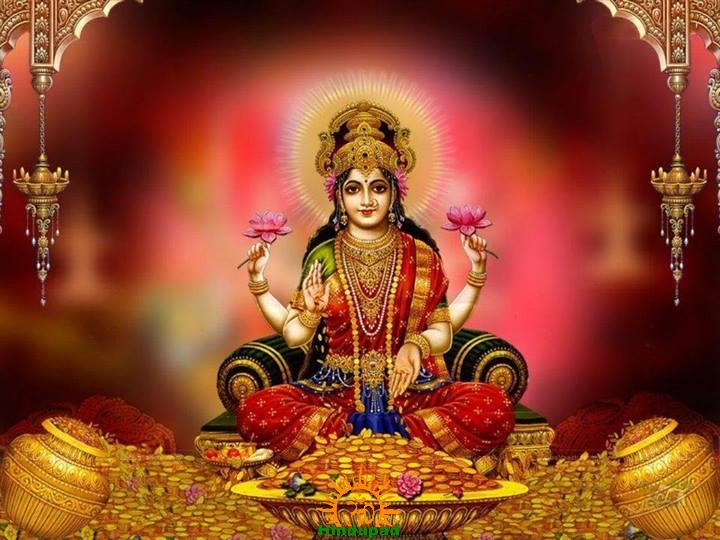
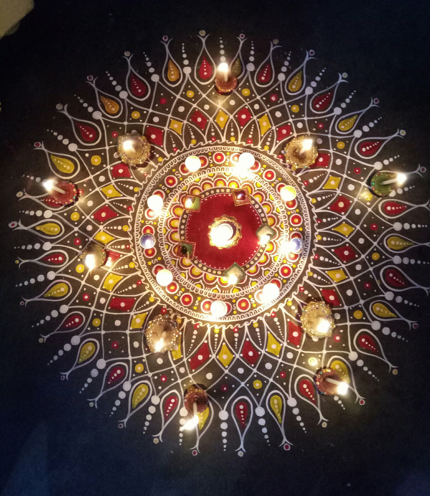
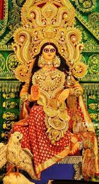
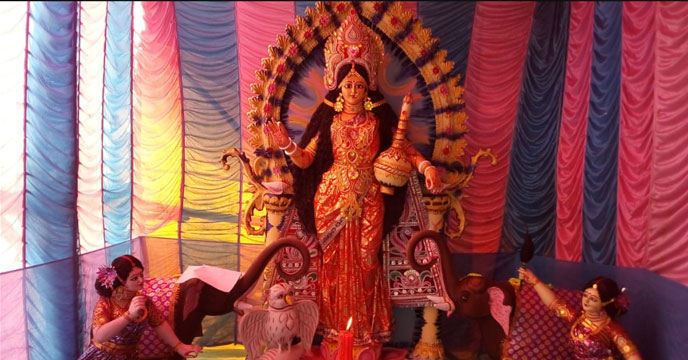

|  |
Lakshmi Puja or Lakshmi Pooja (Sanskrit: लक्ष्मी पूजा, IAST: Lakṣmī Pūjā), is a Hindu religious festival that falls on Amavasya (new moon day) of Krishna Paksha (dark fortnight) in the Vikram Samvat Hindu calendar month of Kartik, on the third day of Deepawali and is considered as the main festive day of Deepawali. According to legend, Lakshmi, the goddess of wealth, prosperity, auspiciousness, and good fortune, and Lord Vishnu's wife, visits her devotees and bestows gifts and blessings upon each of them. To welcome the Goddess, devotees clean their houses, decorate them with finery and lights, and prepare sweet treats and delicacies as offerings. Devotees believe the happier Lakshmi is with the visit, the more she blesses the family with health and wealth. In Bengal Lokkhi Pujo or Laxmi puja is performed on Sarada Purnima day, the full moon day following Vijaya Dashami. |
Lakshmi is believed to roam the earth on the night of Lakshmi[2] Pooja. On the evening of Lakshmi Pooja, people open their doors and windows to welcome Lakshmi, and place diya lights on their windowsills and balcony ledges to invite her in. People wear new clothes or their best outfits as the evening approaches. Then diyas are lit, pujas are offered to Lakshmi, and to one or more additional deities depending on the region of India; typically Ganesha, Saraswati, and Kubera.[3] Lakshmi symbolises wealth and prosperity, and her blessings are invoked for a good year ahead. |  |
|  |
On this day, the mothers, who work hard all year, are recognized by the family. Mothers are seen to embody a part of Lakshmi, the good fortune and prosperity of the household.[4] Small earthenware lamps filled with oil are lighted and placed in rows by some Hindus along the parapets of temples and houses. Some set diyas adrift on rivers and streams. Important relationships and friendships are also recognized during the day, by visiting relatives and friends, exchanging gifts and sweets.[5][6] It is popularly believed that Lakshmi likes cleanliness and will visit the cleanest house first. Hence, the broom is worshipped with offerings of haldi (turmeric) and sindoor (vermilion) on this day. Lakshmi Puja consists of a combined puja of five deities: Ganesha is worshipped at the beginning of every auspicious act as Vighneshvara; goddess Lakshmi is worshipped in her three forms; Mahalakshmi the goddess of wealth and money, Mahasaraswati the goddess of books and learning, and Mahakali. Kubera the treasurer of the gods is also worshipped. |
In Bengal, the goddess Lakshmi is worshipped five days after Vijaya Dashami on the full moon day of Sharada. This is known as Kojagori Lokkhi Pujo (কোজাগরী লক্ষ্মী পুজা). On this day generally, the goddess is worshipped at night. She is also worshipped in the form of banana trees (কলা বউ), designed clay cover of utensils (শরা), accompanied by a small boat containing five drums. She is also worshipped on the eve of Diwali which is commonly known as Dipanwita Lokkhi Puja (দীপান্বিতা লক্ষ্মী পুজো) or Alakshmi Viday (Leaving of Alakshmi). |
 |